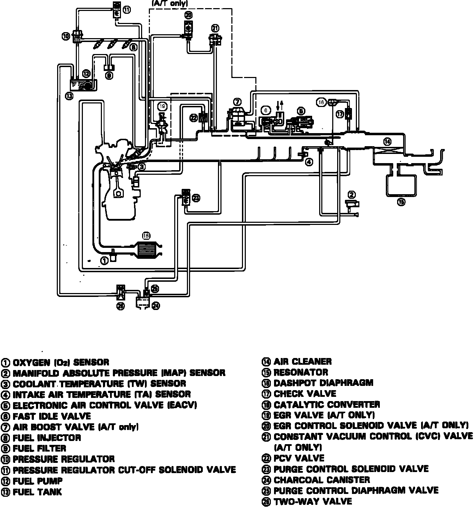
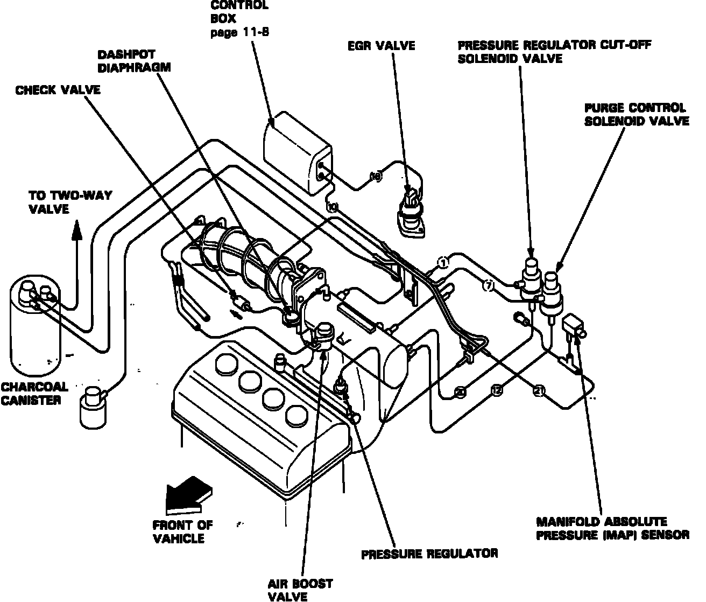
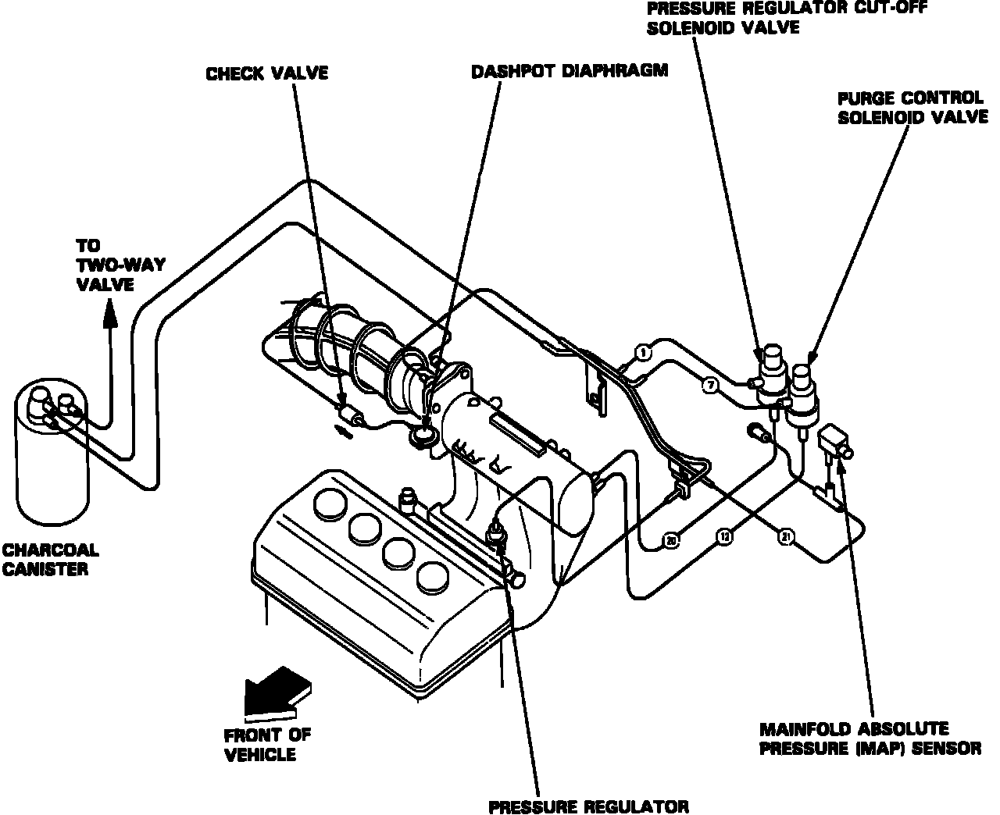
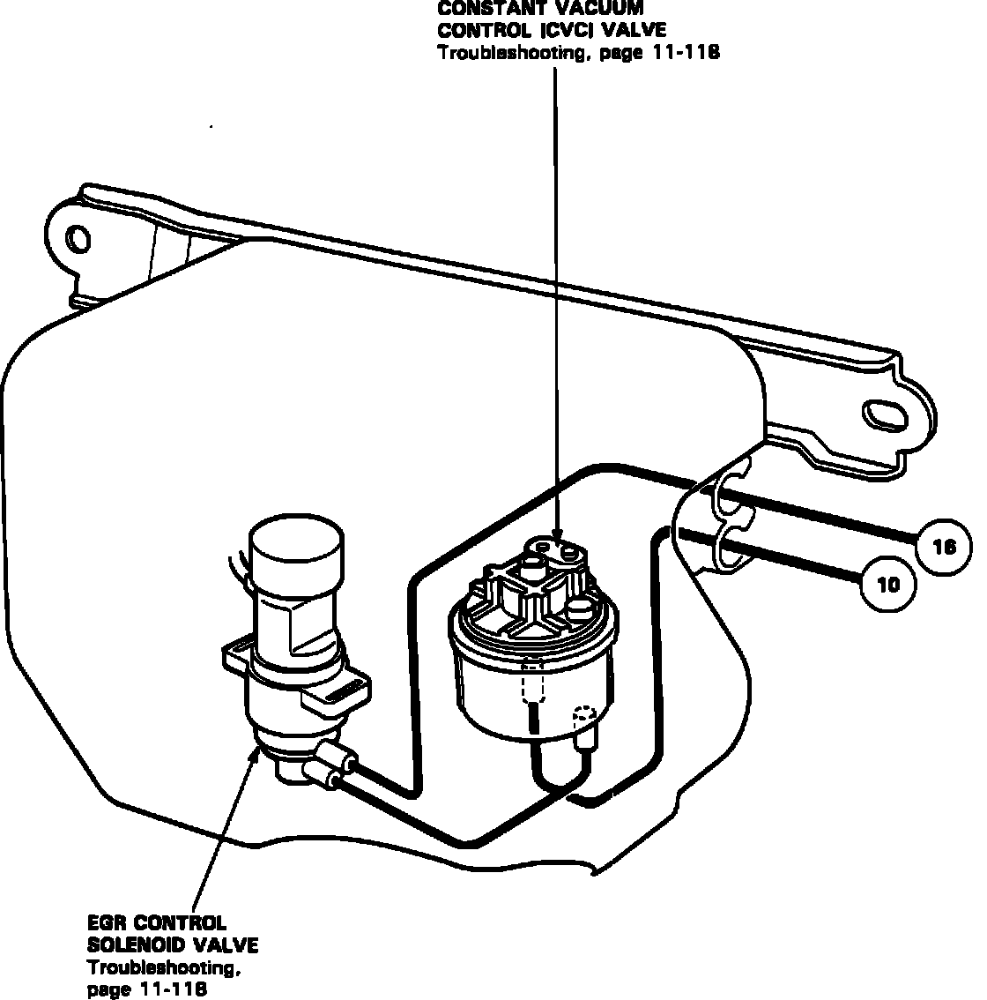

System Diagram
Fuel System Vacuum Schematic:

VACUUM SCHEMATIC
ENGINE VACUUM CONNECTIONS:
Engine Vacuum Connections Automatic Transmission:

Automatic transmission
Engine Vacuum Connections Manual Transmission:

Manual transmission
Control Box Vacuum Connections:

VACUUM CONTROL BOX